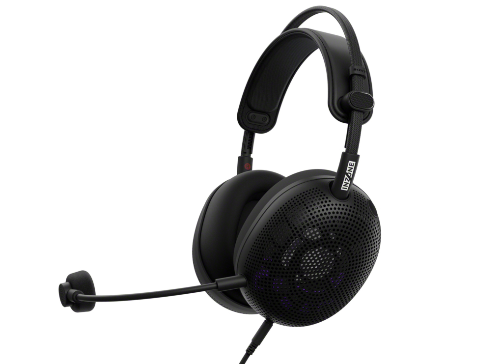

← 全部指南
Best Open-Back Gaming Headphones 2026: What 3 Reviewers Agree On
基于 3 个 YouTube 测评聚合 · 更新于 2026-10-03

Sony INZONE H6 Air
RTINGS's current open-back pick — airy soundstage, customizable EQ app and excellent detachable-mic recording quality at a budget price.
📊 对比一览
| # | 产品 | 推荐度 | 适合 | 价格 |
|---|
| 1 | Sony INZONE H6 Air | 2/3 reviewers | Best open-back for gaming overall | $120-150 |
| 2 | Drop + Sennheiser PC38X | 2/3 reviewers | Best open-back with a mic included | $169-199 |
| 3 | ASUS ROG Kithara | 2/3 reviewers | Flattest, most analytical tuning | $150-200 |
| 4 | Philips SHP9600 | 1/3 reviewers | Best budget open-back | $90-130 |
💬 测评共识
共同优点
- Sony INZONE H6 Air: RTINGS's open-back pick — airy soundstage, customizable EQ, excellent mic recording quality (2/3 mention)
- Drop + Sennheiser PC38X: Joshua Valour's favorite gaming headset — comfort and competitive performance with a mic included (2/3 mention)
- ASUS ROG Kithara: flatter, more analytical tuning for gamers who want audiophile-like neutrality (2/3 mention)
- Philips SHP9600: open-back soundstage under $130, easy to drive from any controller (1/3 mention)
共同缺点
- No isolation: open-back leaks sound both ways — bad for noisy rooms and roommates (2/3 mention)
- PC38X, Kithara and SHP9600 need a wired connection — no low-latency wireless option (2/3 mention)
- Higher-end open-backs benefit from a headphone amp, adding cost (1/3 mention)
🔍 详细解析
Sony INZONE H6 Air
🛒 去 Amazon 购买 →RTINGS's current open-back pick (it replaced the ASUS ROG Kithara in July 2026): an airier, less boxed-in sound than closed-back gaming headsets, with customizable EQ and a detachable boom mic that records excellently.
Compatibility: PC, PlayStation
Design: Open-back over-ear
Microphone: Detachable boom, excellent recording quality
Wireless: 2.4GHz + Bluetooth + 3.5mm wired
适合：Best open-back for gaming overall · $120-150
Drop + Sennheiser PC38X
🛒 去 Amazon 购买 →Joshua Valour's favorite gaming headset for comfort, sound quality and competitive performance — and RTINGS's former open-back pick. The rare open-back that ships with a proper boom mic, no amp needed.
Connection: Wired 3.5mm
Design: Open-back over-ear
Drivers: Dynamic, 28 ohm — easy to drive
Microphone: Noise-cancelling boom mic included
适合：Best open-back with a mic included · $169-199
ASUS ROG Kithara
🛒 去 Amazon 购买 →RTINGS's former open-back pick (replaced by the H6 Air only because the Sony is more customizable and comfortable): a flatter, more analytical sound for gamers who want audiophile-like neutrality. Joshua Valour's pick 'for open gaming'.
Connection: Wired
Design: Open-back over-ear
Microphone: Detachable boom mic
Tuning: Flat, studio-like frequency response
适合：Flattest, most analytical tuning · $150-200
Philips SHP9600
🛒 去 Amazon 购买 →On Joshua Valour's favorites list under $300: a huge open-back soundstage for around $100, easy to drive from any controller or motherboard jack — the entry ticket to open-back gaming.
Cable: Detachable 3.5mm
Design: Open-back over-ear
Drivers: 50mm dynamic, 32 ohm
Impedance: 32 ohms — runs off anything
适合：Best budget open-back · $90-130
📺 视频来源
展开查看 3 个测评视频
📺
RTINGS.com — The 6 Best Gaming Headsets of 2026
观看视频 / Watch📺
RTINGS.com — We Tested 900 Headphones, These Are The Best Gaming Headsets
观看视频 / Watch📺
Joshua Valour — My Favorite Gaming Audio Device!
观看视频 / Watch